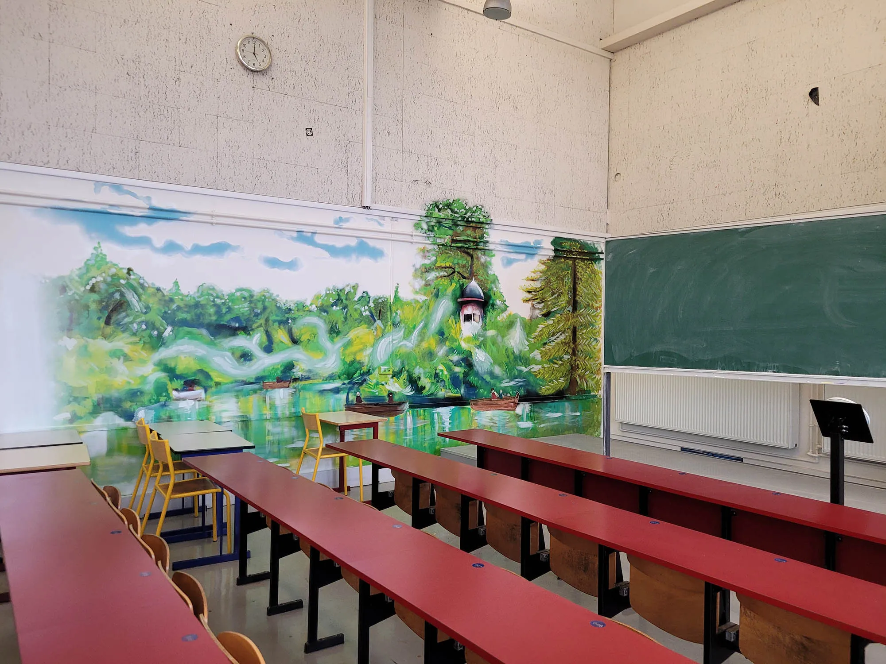

Fenêtre sur Bois
- Projet
- Murs · Fresque de GraffDeco
- Date
- lundi 8 avril 2024
- Lieu
- Campus de Paris Dauphine – PSL
Une fresque inspirée du Bois de Boulogne, avec L’Urbaine et le Bureau des Arts.
Inspirée du Bois de Boulogne, cette fresque de GraffDeco est née d’une collaboration avec L’Urbaine et le Bureau des Arts de Dauphine.
Présentée par le Crous de Paris en 2024, l’œuvre invite les personnes qui traversent le campus à prêter attention à la biodiversité et à leur rapport à l’environnement.


Photos : Crous de Paris · œuvre de GraffDeco